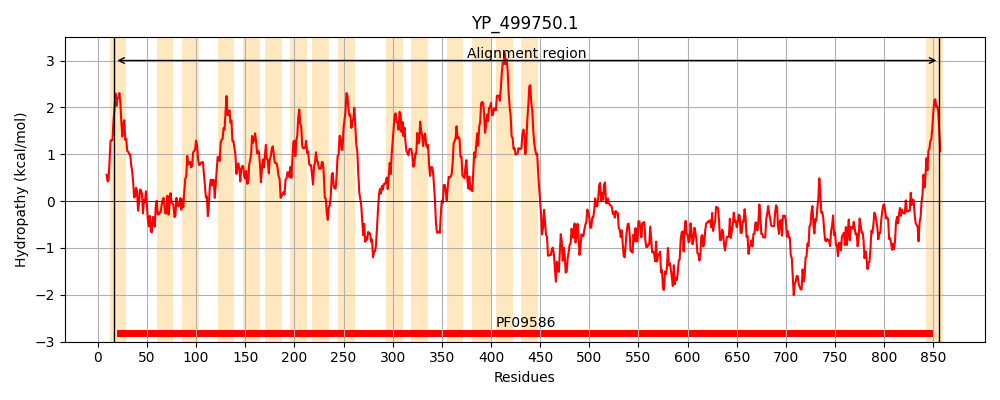
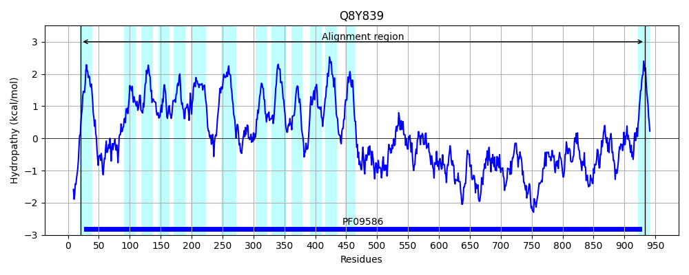
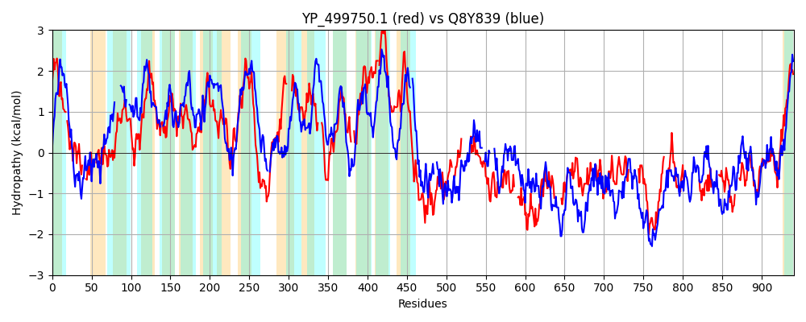

Hit Accession: Q8Y839
Hit TCID: 9.B.144.1.8
Hit Description: gnl|BL_ORD_ID|17070 gnl|TC-DB|Q8Y839|9.B.144.1.8 Lmo1079 protein OS=Listeria monocytogenes serovar 1/2a (strain ATCC BAA-679 / EGD-e) OX=169963 GN=lmo1079 PE=4 SV=1
Mach Len: 941
e:0.000000
Query TMS Count : 16
Hit TMS Count: 14
TMS-Overlap Score: 9.250000
Predicted Substrates:None
BLAST Alignment:
Score: 320 , Bit scores: 127 bits, E-value: 4.0e-30, Alignment length: 941, Percentage identity: 22
Query: 17 TFISVILTLILFSTHIYD-YIVNGTVFSGAGDGFRQMMP----FQMYLYEHLR---SFSSLYDASFGLGGDYMKGLSYYYSLSPLMWLNFLFIKIGETVGIFNPTTIHFWPTNQLIMAMIRAIITFVVTFYLFKILHFKRSANMIATILYGMSTVVIYFNFTWSFYGNLLYLLPLSILGLERYFQQRKIGIFIVAIALTLFSNFYFSYYQAIIIGCYYLYRLIFTYKYDIVSRTQKLICVISATVLSVLSSVFGLFTGISAFLENDRKQNPNVDIPFLTPLDYHYFFFSDGFYITISI------LTIVALLSFKLYRFYFYRLFAIVTWILFIGSLSQ----YFDSAFNGFSFPERRWVYILALSSSALCGLFIQHLSTL---NMKYYLIRTIPVCIIAILYVLLSPTHPLALI-VGIILLIVLAVILKFSLWRY-KKLTVAILVLIVMIQQIVILDNNKNMAIKPYQQSLSTLKQHDYHSNYVNQLIKKINQNATGSFNRIDYMSDY--ALNSPFIYHY-----------NGISLYSSIFNGDILKYYDKTLQINMPIDKNSTYRL---LGNRQNLLSLWNVNDRI----RVNHDDNLPYGFKIKSEHKDNKVRWIHSKNTIHYPSAHITNKVFSNK--------ELKSPLDKEQAMLQGIVSNNIKDVNTHFKAN-KNLLSDSTI-KLNSAAWQSPTKHLLQVKQNNGGLTVQLPKSVSNQFKDLYFEMD------------LELLSPDKAHDVKVNEYTQERNKLTYKYRRVVT---PVTIRIKAPDRIRLSLPKGKYR-------------------VNLKGIYGEDYTTLKD---------ASNSLEAVKVSKTKHGYTITK-----NKNSSGYIVLPTAYNQGMKATSGDQSLKVEQVNGVMTGIKAPKNITKIQLSYTPPYYYLLITITIFGII 856
TF++ + +L + IY + + G F + DGF Q P F+ L + L+ L+ G+GGD + YY L +F + V +F + T +++ + I F+ FKI H A + +++Y S + F+ + LLPL L +ER Q++ I+ I TL SNFYF+Y AI++ Y + R YK + + + + L + + AFL + R + L D Y+ YIT L A+ F L + YR V +I + L +F + FNG S P RW++ +AL S + TL +M+ +LI I +++ + P+ L+ + ++LL L+F Y KK L ++I + + N M + ++ + Q +S V +KI + G+ +ID S Y +L+S + Y N ++ + SI NG + D ++N NS +R+ LG N N+ R + +PYGFK + +V +T Y S + ++ N E SPL+KE+A+ + +N +K+N K L +++I K+N A TK ++V + +L + +LYF +D ++ + K Y RN LT + + T + R+ + ++ S G ++ +NL G+ DY +K E K + T + K + G +V Y +G K + + E+VN G K + I+++Y P + + G+I
Sbjct: 21 TFLTYSVLFVLVTISIYLLFWLRGYSFIWSHDGFNQHYPILKEFRNMLVDFLKHPTQVPELWSWQIGMGGDVVGSFGYYV-------LGDIFAYL---VVLFPADQMELAYTTLILLRLFCVGIAFLALAKNFKINHI---AAVTGSLVYVFSGYLFVSATRHPFFITPMILLPLLCLCVERVLQKKSPVPLILVICWTLVSNFYFAYMLAIMVCIYTVIRYFTHYKKQGIPLLSTIGKLAVYAITGFLMACILFLPNLIAFLGSSRANGEFAN--GLWFYDLSYYLSLGKMYITTESAGYWANLGFAAIAVFVLPFIWQYRKKYPVVFISLVLGLGMMLFPFFGALFNGLSSPSNRWMFAVALPVSIGVSFLLTDYKTLTKKDMRNFLITLIIFIVVSWWGPNFNIYQPILLVPLTLMLLTFFVFFLQFINLNYIKKKAYNGLFYFLIIMLVCV--NLAYMGNYMFSKNGANKVQGQLNSGVVE---RKITELYGGADKKIDKSSFYRTSLSSGYNGFYDNSDANILLDVNTVNSFYSITNGAVA---DLASELN-----NSQFRMTLPLGQMDNRTIFTNILGTTYLFARDDQAGRIPYGFKKIDSAEIERVDKPGISHTDVYESENSVPLMYMNYHTEDRESYEKLSPLEKEEALSYNAIIDNKDTSKREYKSNIKELEFETSIPKVNGKAPAKLTKDKIEVSNAENSIQFKLKNPEETKNAELYFYIDGLDFTPYTFKQRKDIAFAKDEYKTKNMRYNYYRNNLTKRIKEDYTLTAKTSNRVVSASQVDKSELSGYFKRDNMLLNGGFSEKARKQVSINLSGLGTYDYDNIKIYAVPFDDSYTKRMQELKKQAATDLKFDTNKVSAKVSAKQDGVLVTTIPYTKGWKVKVDGKEVSTEKVNTGFIGFSLDKGLHTIEMNYETPMLKAGMVASGLGVI 933 | Protein Hydropathy Plots: |
|---|
|  |  |
Pairwise Alignment-Hydropathy Plot:
|
|---|
|  |